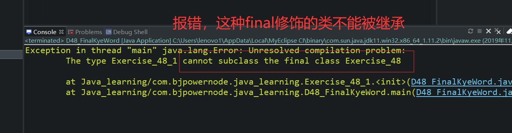

原文出处:本文由博客园博主心悦君兮君不知-睿提供。
原文连接:https://www.cnblogs.com/ruigege0000/p/11809706.html
原文连接:https://www.cnblogs.com/ruigege0000/p/11809706.html
一、final关键字
1.注意点：
（1）final是一个关键字，表示最终的，不可变的。
（2）final修饰的类无法被继承
（3）final修饰的方法无法被覆盖
（4）final修饰的变量一旦被赋值之后，不可以被重新赋值
（5）final修饰的实例变量
（6）final修饰的引用
package com.bjpowernode.java_learning;
public class D48_FinalKyeWord {
public static void main(String[] args) {
Exercise_48_1 e1 = new Exercise_48_1();
}
}
final class Exercise_48{
}
class Exercise_48_1 extends Exercise_48{
}

2.关于myeclipse怎么连接源码
打开某个.class字节码文件，当没有看到源码的时候：点击“Attach Source""
-workspace...源码在当前工作区
-External File ...源码在某个压缩包之中，
-External Folder...源码在某个目录之中
3.对于之后学习的类库，一般是包括三个部分：源码（看源码理解程序）、字节码（程序开发过程中使用的就是这部分）、帮助文档（对源码的解释说明被提取出来，更方便程序的开发）
4.java语言最终规定实例变量使用final修饰之后，必须手动赋值，不能采用系统默认值。
例如
final int i ;//编译错误，因为没赋值。
//或者使用构造方法给它赋值
public class test1{
final int i ;
public test1{
self.i = 100;
}
final User u1 = new User("jfoae");
u1 = new User("iefr");//这样会编译报错，因为引用u1是final修饰的，里面的存的对象地址不能再重新赋值。
u1.id = 89;//编译成功，final修饰的引用虽然指向了某个对象之后，但是所指向的对象内部的内存是可以修改的。
五、源码：
D48_FinalKyeWord.java
地址：
https://github.com/ruigege66/Java/blob/master/D48_FinalKyeWord.java
2.CSDN：https://blog.csdn.net/weixin_44630050（心悦君兮君不知-睿）
3.博客园：https://www.cnblogs.com/ruigege0000/
4.欢迎关注微信公众号：傅里叶变换，个人公众号，仅用于学习交流，后台回复”礼包“，获取大数据学习资料